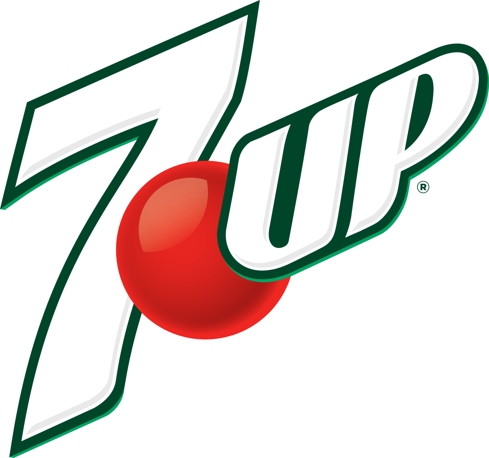
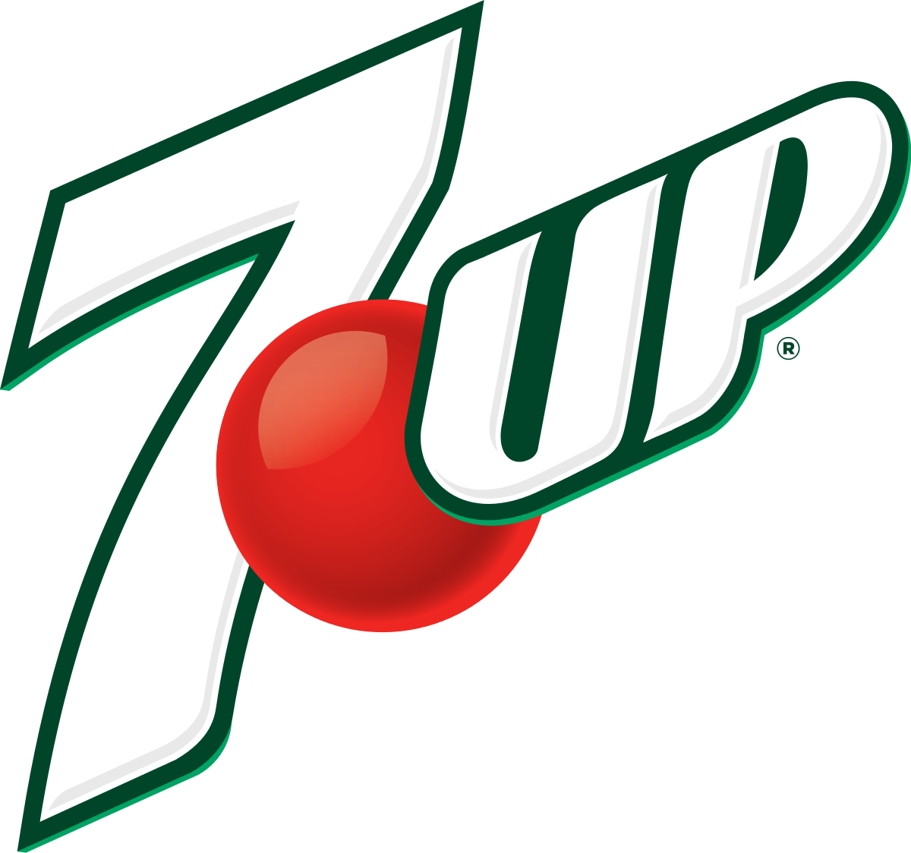

Conmebol
Copa America
2021
Watch Live


Neymar came into prominence at Santos, where he made his professional debut aged 17.

Born and raised in central Argentina, Messi relocated to Spain to join Barcelona at age 13.

Cristiano Ronaldo dos Santos Aveiro GOIH ComM is a Portuguese professional footballer who plays as

Paulo Dybala into prominence at Santos, where he made his professional debut aged 17.

Mesut Ozil in central Argentina, Messi relocated to Spain to join Barcelona at age 13.

Mauro Icardi dos Santos Aveiro GOIH ComM is a Portuguese professional footballer who plays as

Di Maria into prominence at Santos, where he made his professional debut aged 17.

Kylian Mbappé in central Argentina, Messi relocated to Spain to join Barcelona at age 13.

Mohamed Salah dos Santos Aveiro GOIH ComM is a Portuguese professional footballer who plays as
 

Our development squad rounded off their pre-season campaign with a narrow defeat at National League side Boreham Wood on Tuesday evening.Our development squad rounded off their pre-season campaign with a narrow defeat at National League side Boreham Wood on Tuesday eveningarvey Vale went closest for the visitors in the first period, twice denied by goalkeeper Nathan Ashmore,